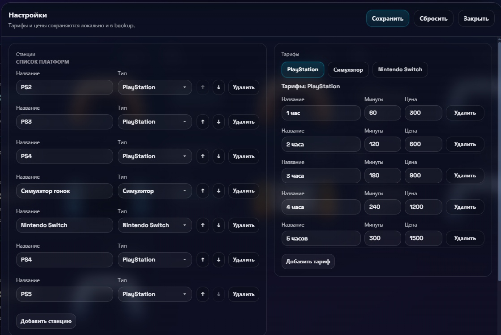
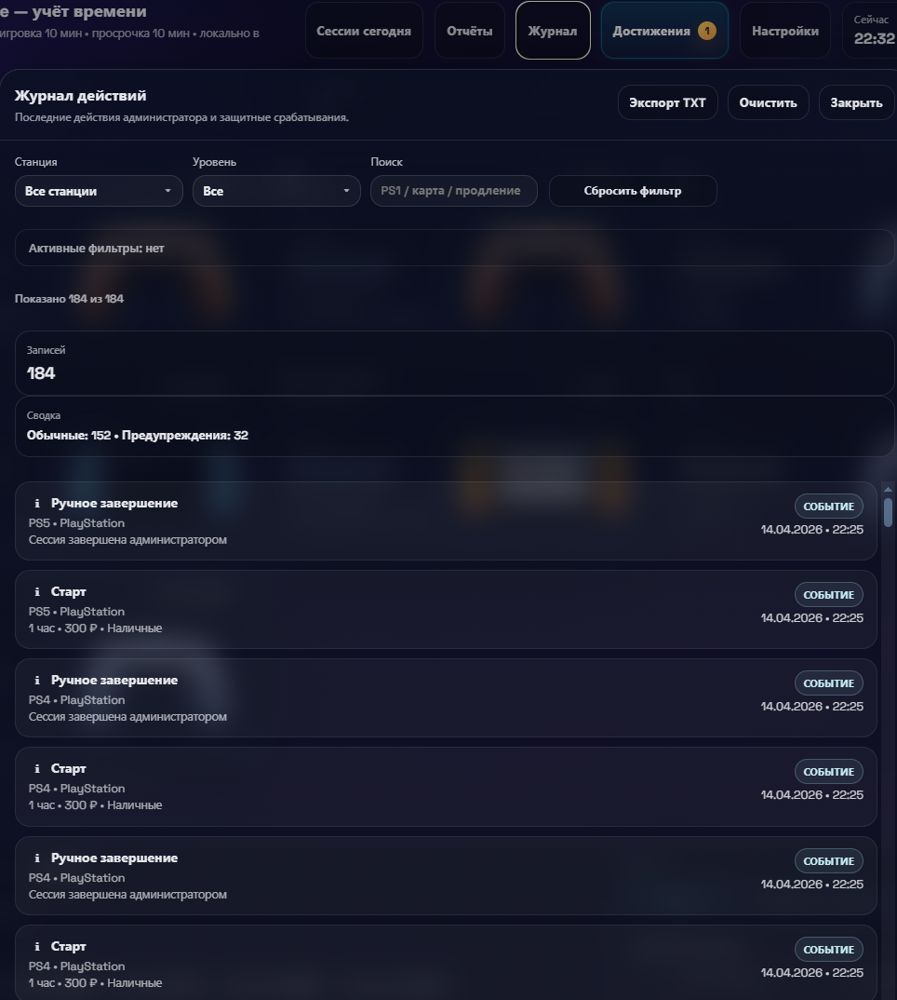
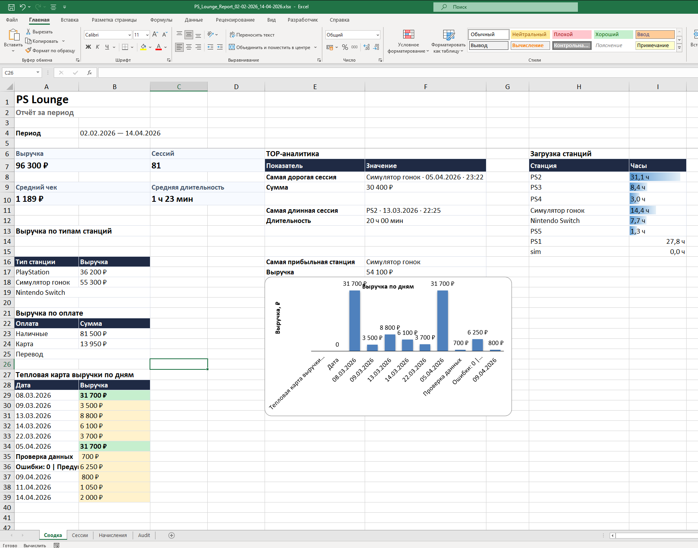
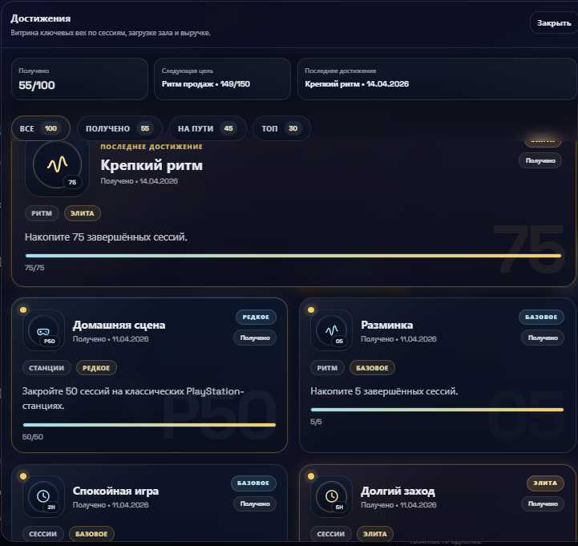

PS Lounge — локальная система смены, где администратор ведёт станции, деньги, продления, журнал и настройки в одном рабочем окне.
Это не витрина ради вау-эффекта. PS Lounge собирает реальную операционную логику площадки:
запуск и завершение сессий, оплаты, доигровки, служебные действия, отчёты по периоду и настройку конфигурации зала.
Не одна красивая панель, а набор рабочих экранов под смену, отчёты и настройку площадки.
Ниже собраны реальные экраны второй версии: смена со станциями и действиями, настройки через интерфейс, журнал, XLSX-аналитика и слой достижений по смене.
Главный экран смены
На одном экране видны станции, статус, остаток времени, оплата, активная панель управления и следующий шаг по сессии.

Настройки через интерфейс
Через интерфейс меняются список платформ, типы станций, тарифные сетки и порядок отображения в зале.

Журнал действий
Фильтры по станции и уровню, поиск по событиям, экспорт TXT и быстрый разбор спорных действий по смене.

XLSX-отчёт за период
Сводка по выручке, средней длительности, загрузке станций, оплатам и управленческим разрезам по датам.

Внутренняя витрина KPI
Отдельный экран с целями, прогрессом и завершёнными достижениями, который помогает держать темп смены и видеть KPI вживую.
Сессия хранит не только время, но и деньги
Каждая игровая сессия остаётся цельной записью: время, тариф, сумма, способ оплаты, доначисления и текущее состояние станции.
видно остаток времени, окончание, оплаченный тариф и фактическую форму оплаты;
данные не размазываются по бумажкам и чатам, а остаются внутри одной сессии;
эти же данные потом попадают в журнал, отчёты и управленческую аналитику.
Продления и служебные действия не вынесены в отдельный софт
Панель смены собрана так, чтобы администратор не прыгал между калькулятором, таблицей и ручными заметками.
способы оплаты: наличные, карта, перевод;
фиксированные платные продления на дополнительные интервалы;
служебные +10, -10 и другие корректировки в одном сценарии с сессией.
Отчёты строятся по периоду, станции и типу оплаты
Система даёт управляющему не только текущий экран смены, но и нормальный слой контроля за диапазон дат.
отчёты по сессиям и начислениям за выбранный период;
фильтрация по типу станции и способу оплаты;
сводка по выручке, среднему чеку, загрузке и графику по дням.
Площадка настраивается под ваш реальный зал
Станции, типы платформ и тарифные сетки редактируются через UI, поэтому продукт можно адаптировать под конкретную конфигурацию площадки.
типы станций: PlayStation, Nintendo Switch, симулятор;
тарифы, цены, интервалы, логика времени и пороги доигровки;
названия и состав станций под фактическую конфигурацию зала.
Смена
Что получает администратор в реальной работе
Главная задача здесь не “красиво показать зал”, а сократить ручные действия и держать смену в управляемом состоянии.
01
Запуск, продление и завершение сессии
Выбор станции, тарифа, оплаты, старт, продление, доигровка и завершение собраны в одном рабочем цикле.
02
Защита от пустых и спорных действий
Система снижает риск дублей, пустых операций и хаоса при ручных корректировках внутри смены.
03
Восстановление сессии и журнал
Ошибочно закрытую сессию можно вернуть, а ключевые события и действия администратора остаются в журнале для разбора.
Многолистовой XLSX вместо простого журнала
Экспорт нужен не только ради архива: это уже нормальный управленческий слой для владельца и управляющего.
отдельные листы по сводке, сессиям и начислениям;
разрезы по оплате, станциям и дням;
Audit-лист при обнаружении расхождений в данных.
Журнал действий и экспорт TXT
Спорные моменты больше не завязаны только на память администратора и устные пояснения по смене.
фильтры по станции и типу записи;
поиск по событиям и служебным операциям;
выгрузка журнала для внутреннего разбора.
PIN-защита настроек
Критичные параметры не должны свободно меняться в каждой смене без контроля и подтверждения.
вход в настройки по PIN-коду;
смена PIN и ограничение числа попыток;
временная блокировка после серии ошибок.
Локальная устойчивость данных
PS Lounge рассчитан на локальный сценарий эксплуатации и аккуратно относится к состоянию текущей смены.
основное состояние, резервная копия и fallback-чтение;
история snapshots для локальной версии;
документация для запуска и эксплуатации без обязательного интернета.
Кому полезно
Когда PS Lounge даёт реальную выгоду площадке
Для владельца
Видно загрузку, выручку, структуру оплат и проблемные места смены, а не только красивый интерфейс на экране.
Для управляющего
Можно быстрее менять тарифы, состав станций и правила работы площадки без постоянной зависимости от разработчика.
Для администратора
Проще работать в смене: меньше ручных таймеров, меньше ошибок и меньше хаоса при продлениях, оплатах и закрытии сессий.
Следующий шаг
Если хотите запустить зону не только с железом и интерьером, но и с понятной операционной логикой, отправьте стартовый план.